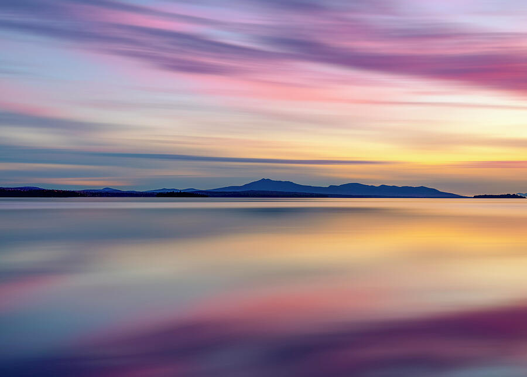
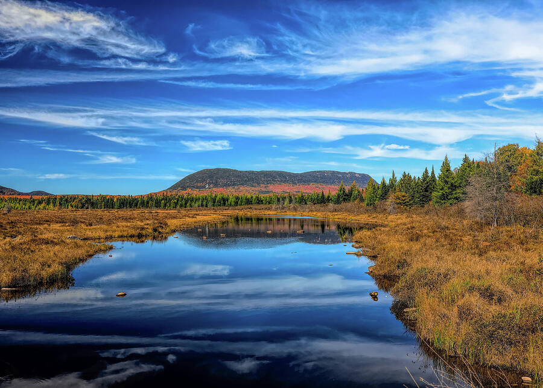
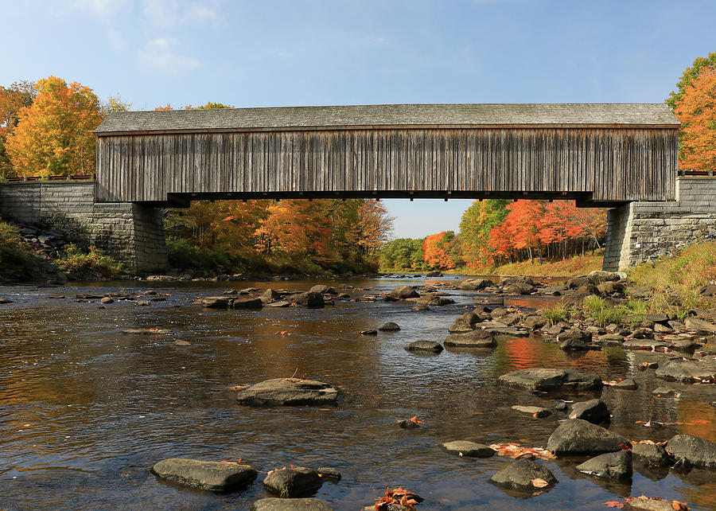
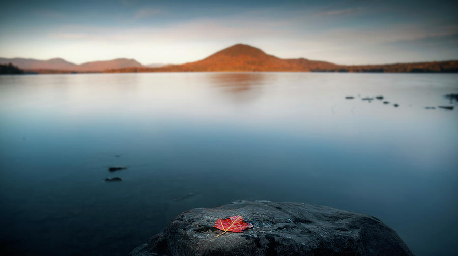
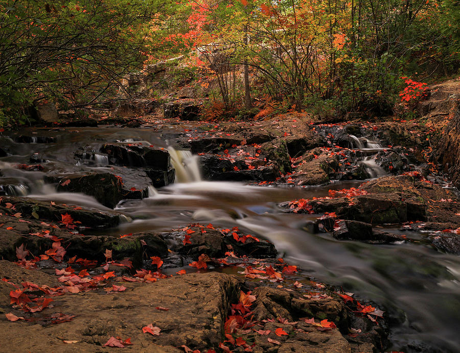
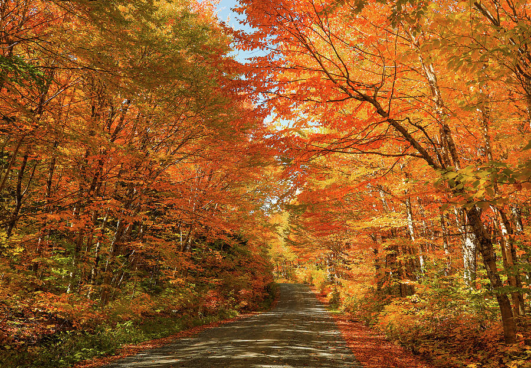
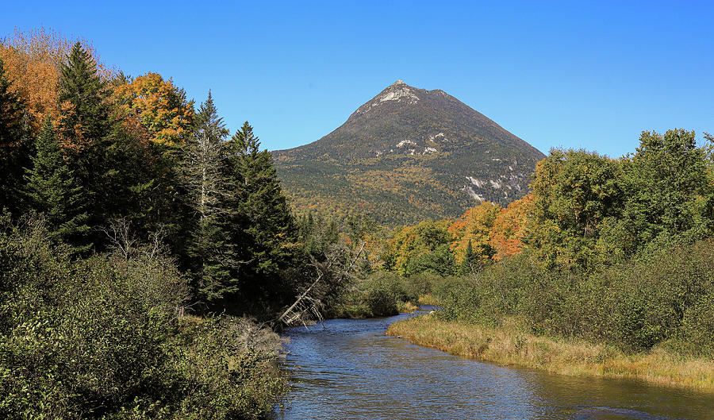

Lily Bay State Park
Camping on Moosehead Lake with easy access to quiet shoreline, changing weather, and early-morning reflections.
Maine Fall Photography · Field Notes
A personal road trip through Moosehead Lake, Baxter State Park, Mount Katahdin, Grafton Notch, and the quieter roads and waters in between.
A trip built around the landscape
I camped at Lily Bay State Park on Moosehead Lake, using the campground as a quiet base for several days of exploring northern Maine. It was the kind of trip where the day began before sunrise, often with a layer of cold air over the water and no real sound beyond the trees.
Maine in autumn can be dramatic, but what stayed with me most was the pace. The distances between places encouraged me to slow down. A road, a small pond, or a break in the forest could become the best part of the day simply because I had enough time to stop and look.
The route connected some of Maine's best-known landscapes—Baxter State Park, Mount Katahdin, and Grafton Notch—with quieter scenes around Lily Bay, Wilson Pond, and roadside streams. The photographs became a record of the trip, but also of how it felt to spend a few days living close to the weather.
Trip route & practical links
This was not a strict point-to-point itinerary, but Lily Bay made a natural base for Moosehead Lake before longer drives toward Baxter State Park and, later, Grafton Notch. These official links are useful for current access, camping, and park information.
Camping on Moosehead Lake with easy access to quiet shoreline, changing weather, and early-morning reflections.
Slow park roads, broad Katahdin views, ponds, autumn forest, and a landscape that deserves an unhurried day.
A more intimate landscape of waterfalls, rock, forest, and roadside stops, including Screw Auger Falls.
Park access, reservations, road conditions, and seasonal services can change. Check the official pages before planning a trip.

Camping at Lily Bay
Camping at Lily Bay kept me close to the landscape instead of passing through it. The lake was there in the evening after the drive ended and again in the first light of morning. That changed how I photographed. I could return to the same shoreline, notice the wind, and wait for the reflections to settle.
There is something useful about sleeping outdoors on a photography trip. You become more aware of temperature, cloud cover, and the direction of the light before you ever pick up the camera. Even when the conditions are not perfect, the experience feels complete.
Baxter State Park
Baxter State Park felt different as soon as I entered. The roads were slower, the landscape broader, and Mount Katahdin seemed to appear and disappear depending on the forest and the turn of the road.
One of the clearest views of the mountain came with water and autumn forest layered below it. The mix of open water, evergreen forest, and fall color made the scene feel much larger than a single photograph could hold.
I also remember the roads themselves. The autumn canopy was so strong in places that simply driving through the park became part of the visual experience.
Quiet water and softer light usually made the strongest lake and mountain scenes.
Some of the best images appeared between destinations rather than at the planned overlook.
Clouds, mist, and shifting light changed the mood of the landscape within minutes.
Northern Maine rewards fewer stops and more time spent noticing each place.
.jpg)
Grafton Notch State Park
Grafton Notch brought me back into a closer, more enclosed landscape. Instead of distant mountain views, I was working with moving water, wet stone, and color pressed tightly around the stream.
Screw Auger Falls was the natural centerpiece, but the smaller cascades nearby were just as memorable. Overcast light helped control the contrast and let the autumn leaves hold their color while longer exposures softened the water.
After the openness around Moosehead Lake and Baxter, the gorge felt intimate. It was a reminder that a trip does not need one visual style. The variety is often what makes the final group of photographs feel complete.
Maine fall photography
These images trace the trip beyond the major destinations—from a single leaf beside Wilson Pond to covered bridges, bog reflections, quiet cascades, and Mount Katahdin at first light.
.jpg)
Morning mist, river reflections, and a broad sweep of autumn forest below Katahdin.
View this print →
A quiet wetland reflection with open sky and distant autumn hills.
View this print →
Historic wood, stone, moving water, and peak foliage along a Maine back road.
View this print →
A single maple leaf turned a wide lake view into a quieter, more personal scene.
View this print →
Moving water weaving between dark rocks and freshly fallen red leaves.
View this print →
A simple gravel road became one of the clearest memories of peak Maine color.
View this print →Camping at Lily Bay meant ending some days beside the shoreline as soft color settled across the still water.
View this print →
A quieter mountain view showing the scale and color of the park beyond Katahdin's most familiar angles.
Explore Maine prints →What stayed with me
Looking back, I remember the campfire as much as the photographs. Evenings watching the light fade across Moosehead Lake became just as memorable as standing beneath Mount Katahdin or hiking through Grafton Notch.
Some of my favorite trips are not measured by how many places I reached or how many images I brought home. They are the ones where I felt present enough to notice the changes in the light, the sound of water, and the first signs of weather moving across a lake.
Maine has a way of slowing everything down. That pace shaped the photographs and is probably the reason the trip still feels so clear to me.